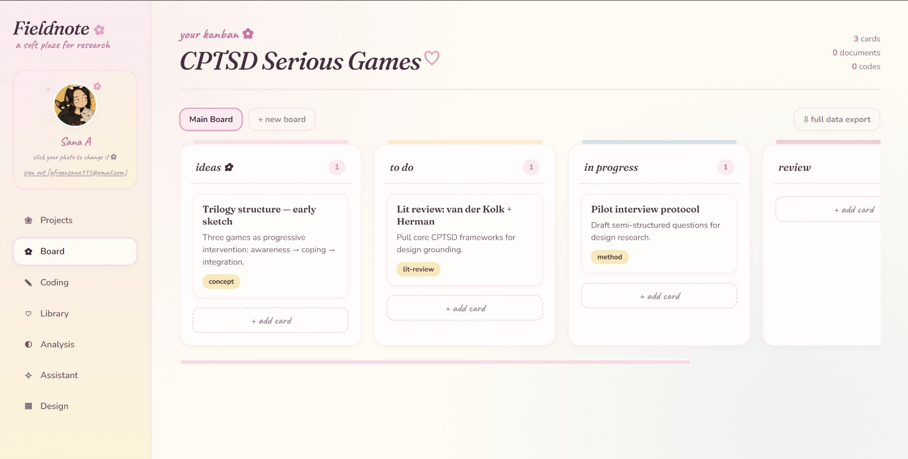
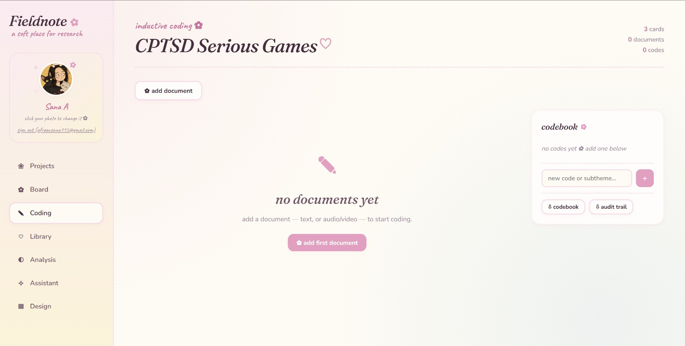
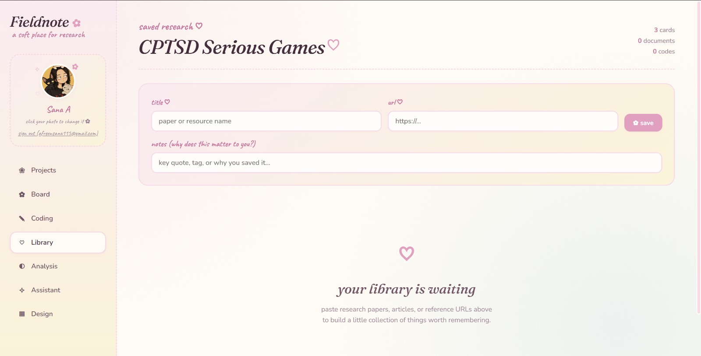
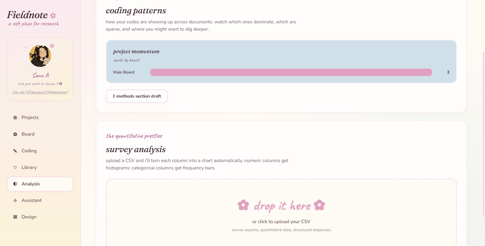
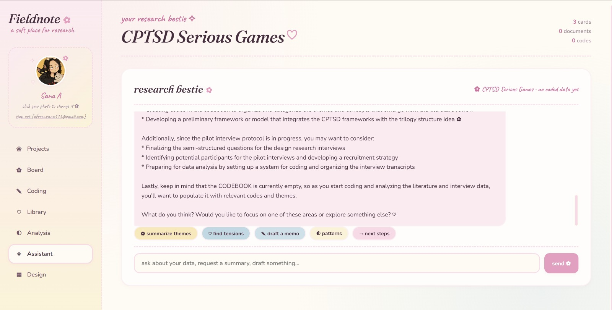
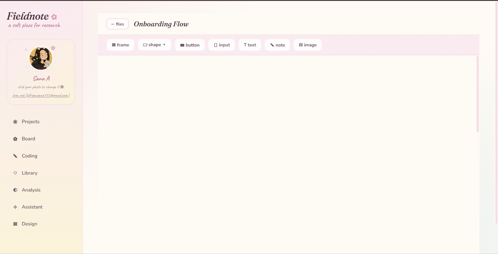

The Problem
Coding a qualitative study usually means stitching together tools that were never built for it — a spreadsheet for the codebook, Google Docs for source transcripts, Miro or a separate whiteboard for affinity mapping, and a mental note (rarely written down anywhere durable) for why a given code exists. Existing dedicated research tools tend to fall into two camps: expensive, enterprise-grade platforms built for research ops teams, or general-purpose tools that don't actually understand what a researcher's workflow looks like.
What I built
Fieldnote is a research workspace organized around six modules:
Board
Project-level organization, kanban-style, color coded across active studies.
Coding
Raw text, audio, or video goes into a canvas; excerpts get highlighted and tagged to codes with memos attached.
Library
Source documents and links, each annotatable with its own notes.
Analysis
CSV import plus auto-generated charts, including code frequency.
Assistant
An AI panel scoped to the active project for surfacing patterns.
Design
A lightweight canvas for translating findings directly into early design artifacts.

Home screen — every project's board, document, and code counts at a glance

Board — kanban-style project planning, tied to the active study

Coding — codebook sidebar with memo support and an audit-trail export

Library — saved sources with a note on why each one matters

Analysis — coding patterns plus CSV-to-chart survey analysis

Assistant — context-aware suggestions grounded in the project's real data

Design — a lightweight canvas for turning findings into early artifacts
Design decisions
- Memos live on the code, not in a separate document. In most ad hoc research setups, the reasoning behind a code gets separated from the code itself within a week. Attaching the memo directly to the code in the sidebar keeps analytic rigor attached to the artifact.
- Local-first storage. Research data — especially sensitive interview content or unpublished findings — has real privacy stakes. Keeping primary data local by default was a methodology-driven decision, not just a technical one.
- The Design module keeps research and design in one workspace. Findings synthesized in one tool and handed off to a separate design tool tend to lose their supporting evidence in the handoff.
Why this matters for how I work
Building Fieldnote required understanding qualitative methodology well enough to encode it into software: what a codebook actually needs, what makes affinity mapping useful versus decorative, and where research ends and design begins in a real workflow. It's the clearest evidence I have that I don't just execute research methods — I understand them structurally, well enough to build the tools other researchers would use to do the same work.
Constraints & reflection
Fieldnote was designed and built solo, and it hasn't been tested with another researcher yet — everything in it reflects my own understanding of what a coding workflow needs, not validated feedback from someone else's process. That's the honest limitation: it's methodologically sound by design, not by evidence. The next real step would be putting it in front of one or two researchers with an active project and watching where their workflow diverges from what I assumed.